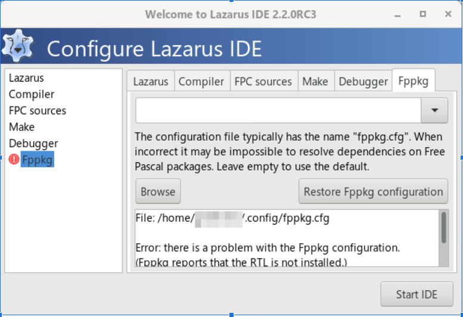
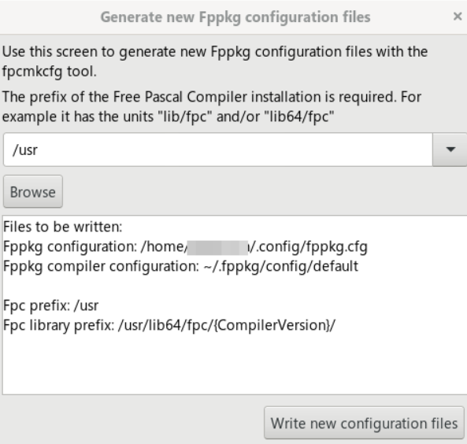

Lidando com a mensagem: “Error: there is a problem with the Fppkg configuration”
Algumas vezes, ao executar o programa, pode aparecer a seguinte mensagem:

Error: there is a problem with the Fppkg configuration.
Pelas minhas observações, ela acontece porque o arquivo onde são guardadas algumas configurações não existe, está corrompido ou você acabou de fazer uma instalação limpa. Como arquivo de configuração, você poderá usar o padrão que ele oferece, que é ~/.config/fppkg.cfg.
Não é preciso se alarmar com a mensagem, apenas clique em Restore Fppkg configuration e então surgirá esta tela:

Se você indicar /usr como sugerido, a IDE entenderá que o Free Pascal está instalado em uma árvore /usr (como /usr/lib64/fpc, /usr/bin, etc.). Vamos verificar se isso é verdade no seu sistema:
rpm -ql fpc | head -10 | grep /usrO retorno deverá ser algo semelhante a isto:
/usr/bin/bin2obj
/usr/bin/chmcmd
/usr/bin/chmls
/usr/bin/cldrparser
/usr/bin/compileserver
/usr/bin/cvsco.tdf
/usr/bin/cvsdiff.tdfComo podemos confirmar acima, o prefixo /usr é onde o Free Pascal realmente instalou seus arquivos. Portanto, você pode confirmar /usr na tela de configuração e posteriormente clicar em Start IDE.